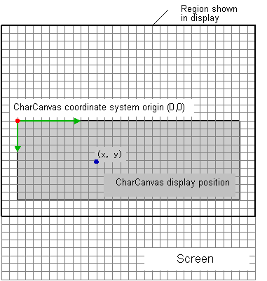

Text Character Drawing Overview
About the Term "Character"
In the Text Character and Character String Drawing libraries, the term "character" always refers to an 8x8 pixel image that is a compositional element of OBJs and BGs. "Character" is not used to refer to the symbols of written language, which are called "text characters."
Text Character Drawing Library
The Text Character Drawing library draws text characters in pixel units on screen display elements composed of character BGs or character OBJs.
CharCanvas
The Text Character Drawing library associates the draw-target characters with a virtual drawing screen called the CharCanvas and then draws text characters on that virtual screen. The CharCanvas drawing screen entity is a solid mass of tiled characters. When a text character is drawn on the virtual drawing screen, the Text Character Drawing library draws on the characters that make up the entity of the screen.
With the Nintendo DS, even if drawing is done on characters, that is not enough for display on the physical screen.
For BG characters, screen configuration is necessary, and for OBJ characters, OAM configuration is necessary. However, the Text Character Drawing library has functions that simplify the configuration of these settings.
In addition, for OBJ characters another possibility is to construct a cell from the CharCanvas and draw with the renderer.
Text Character Drawing Functions
The functions of the Text Character Drawing library can be divided into five groups.
Based on these classifications, the flow for drawing a text character is as follows.
(1) Build the CharCanvas using the CharCanvas build functions.
Configure the screen and OAM settings using the configuration functions.
As an alternative, construct a cell using the cell-building functions.
↓
(2) Clear the CharCanvas using the fill functions.
↓
(3) Draw a text character using the drawing functions.
↓
From this point, use steps (2) and (3) only when required.
(4) If a cell was built in (1), draw the cell using the renderer.
In many cases, it is better to use the Character String Drawing library instead of directly rendering the text character with the text-character drawing functions in step (3).
CharCanvas Coordinate System
The text character drawing functions express the position of the text character using a pixel-unit coordinate system; the upper-left corner of the CharCanvas is the origin, and moving towards the lower-right corner is the positive direction. In this documentation, this coordinate system is called the CharCanvas coordinate system. 
See Also
Revision History
2005/07/12 Added cell-building functions.
2005/05/25 Initial version.
CONFIDENTIAL